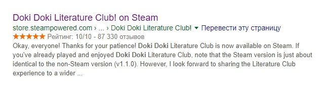
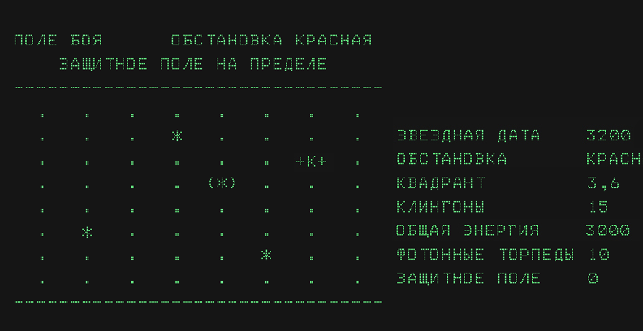

Пишем ниже,во что вы играли до и/или после БЛ,делитесь мнением о пройденной игре. Я напишу кратко о Mass Effect'е ( сразу о трилогии). Игра мне понравилась,возможность выбора очень порадовала.Возможность высаживаться на некоторые планете в Первом Эфекте массы порадовало( хотя авторы зачем то убрали эту возможность в последующих частях). Возможность контактировать с персонажами команды тоже хорошая... Но... Как бы это сказать... Со второй части там гомосятины приувеличелось(Наверно из-за того что их купило ЕА). Помню всех персонажей, особенно самый лучший для меня Джокер (Хотя его нельзя выбрать на миссию, но все же он чем-то для меня приколен.) Припоминаю смерть Легиона,аж жалко стало,умереть ради того что бы помочь своим собратьям.Концовка первой части порадовала,особенно на моменте попасть в телепорт.Конец второй части тоже интересный,но вот сильно он влияет на третью часть,ведь дам можно угробить своих друзей. А вот конец трилогии... То ли дело Шепард умер,то ли нет, хотя в откр. космосе дышать нельзя. Кто проходил,у вас вешали имя Шепарда на траурную плиту?
Во что вы играли до и/или после Бесконечного лета?
Сообщений 1 страница 30 из 31
Поделиться12015-10-29 21:23:56
- Ньюфаг

- Откуда: Россiйская Iмперия,Губкин
- Зарегистрирован: 2015-10-22
- Сообщений: 38
- Пол: Мужской
- Последний визит:
2016-12-02 17:36:27
Поделиться22015-10-29 23:32:52
- Ньюфаг

- Откуда: Н.Новгород
- Зарегистрирован: 2015-10-21
- Сообщений: 3
- Пол: Мужской
- Возраст: 21 [1997-03-24]
- Последний визит:
2016-10-23 15:36:18
До БЛ больше был по стрелялкам всяким. CS, GTA, Half-Life, иногда стратегии, FIFA, C&C. Ещё прошёл Fahrenheit, так что формально я был готов к такому проекту, как Лето.
Tulpa: Imagination Games и Your, Endless, Mind. Майндфак майндфаком, как именно психологическая штука неплохо, как новелла - среднячок.
KONA Project - дошёл до третьей главы и надоело читать.
Katawa Shoujo - иногда почитываю.
С песней по жизни - единственная вещь, из-за которой я взялся читать эту новеллу - там есть Мику. Но, немного почитав, я понял, что лучше бы не читал. Скучное повествование, развития почти никакого. Но спрайты ничего там.
Потом перепрошёл Half-Life 2. Ностальжи такая ностальжи.
Кто проходил,у вас вешали имя Шепарда на траурную плиту?
У меня всё уничтожила мощная ударная волна. Кроме челнока и пилота...
Отредактировано PromoCode321 (2015-10-30 18:02:36)
Поделиться32015-10-30 00:58:59
В 1997 году, будучи еще дитём гонял в MDK на офисном компе) Это был первый опыт знакомства с комп. играми) Сейчас практически ни во что не играю, жалко времени)
Поделиться42015-10-30 02:36:26
- Ньюфаг

- Откуда: Москва
- Зарегистрирован: 2015-10-26
- Сообщений: 29
- Пол: Мужской
- Возраст: 24 [1993-08-16]
- Последний визит:
Сегодня 13:55:28
Поскольку БЛ и 7дл визуальные новеллы, расскажу про свой опыт:
Собственно само Бесконечно лето (спасибо кэп)
Конечно же Katawa Shoujo
Grisaia no Kajitsu (самая большая новелла что я играл, прохождение одного коммон рута занимает 20 часов)
Sharin no Kuni, Himawari no Shoujo (очень интересная новелла про утопическое общество)
Ever17
G-sengou no Mao
Saya no Uta (романтика + хоррор, необычное сочетание)
Пожалуй все, кое-какой опыт ВНок у меня есть, но явно не отаку. Хотя все пройдены вещи считаются одними из лучших и рейтинги у них самые высокие (собственно говоря, я их так и выбирал)
Поделиться52015-11-08 12:57:50
- Ньюфаг

- Зарегистрирован: 2015-10-23
- Сообщений: 1
- Последний визит:
2017-11-04 17:52:07
Здравия товарищи. Я целую неделю жизни провел не зря) Надеюсь многие знакомы с ВН Clannad. Так вот. Пока 7ДЛ еще пилится а делать нечего всем ОЧЕНЬ советую пройти. Можно сказать это классика визуальных новелл. Сильный сюжет, длинная история, замечательные концовки. После прохождения посмотрел еще и аниме. За два дня марафоном два сезона. Это просто что-то. Первый сезон можно будет и посмеятся и немного всплакнуть. А вот второй не оставит равнодушным и доведет до слёз даже совсем дубовых людей. Это просто божественная вн и еще более божественный сериал. Таких эмоций я не испытывал пожалуй с тех пор как прошел БЛ и 7ДЛ. Но от Clannad грусти намного больше. Так что всем любителям трогательных и грустных историй советую.
Поделиться62015-11-08 13:38:57
- Вахаха!~

- Откуда: Санкт-Петербург
- Зарегистрирован: 2015-10-21
- Сообщений: 344
- Пол: Мужской
- Последний визит:
Сегодня 16:44:15
Кланнад хорош. Но разве аниме не первой появилась?
Поделиться72015-11-08 14:38:10
Кланнад хорош. Но разве аниме не первой появилась?
Нет, Аниме уже по ВН было) Я пробовал Кланнад осилить (он в переводах по сети гуляет), но что-то не сложилось...
Поделиться82015-11-08 14:39:45
- Вахаха!~
- Откуда: Санкт-Петербург
- Зарегистрирован: 2015-10-21
- Сообщений: 344
- Пол: Мужской
- Последний визит:
Сегодня 16:44:15
Да нет, я о том, что сначала было Аниме "Кланнад", потом сделали его новеллизацию. А не наоборот, как это часто бывает. А Кланнад в переводе дрянь, лучше в оригинале или хотя бы на англицкой мове - всё-таки, официальный релиз, если я ничего не путаю.
Поделиться92015-11-08 14:47:26
Да нет, я о том, что сначала было Аниме "Кланнад", потом сделали его новеллизацию. А не наоборот, как это часто бывает. А Кланнад в переводе дрянь, лучше в оригинале или хотя бы на англицкой мове - всё-таки, официальный релиз, если я ничего не путаю.
ВН как раз была первой, я не настолько ценитель чтобы в инглише пытаться читать, не осилил потому что аниме смотрел, до чтения) А там до выходов на руты текст идет слово в слово)
Поделиться102015-11-08 15:02:45
- Вахаха!~
- Откуда: Санкт-Петербург
- Зарегистрирован: 2015-10-21
- Сообщений: 344
- Пол: Мужской
- Последний визит:
Сегодня 16:44:15
Пошёл проверять в гугл.
Извиняюсь, был неправ (= До последнего был уверен, что сначала появилась киношка, а потом игра.
Поделиться112015-11-08 16:04:32
- Ньюфаг
- Зарегистрирован: 2015-10-23
- Сообщений: 1
- Последний визит:
2017-11-04 17:52:07
Самое интересное это смотреть с оригинальной японской озвучкой и русскими сабами. Так намного атмосфернее чем с ущербной русской озвучкой (не из-за того что русская, а из-за того что реально ущербная , да и оригинальная атсосфернее)
Отредактировано XOLODOS (2015-11-08 16:04:58)
Поделиться122016-11-02 18:44:41
1. Katawa Shoujo. Завершением стало прочтение на фикбуке Миша-рута и Иванако-рута.
2. Бесконечное Лето + моды. Осваиваю до сих пор.
3. Песнь Сайи. Получил 2\3 концовок. На цветение не хватает.
4. Without Within.
5. Clannad. После рута Кё не могу читать эту ВН - сердце шалит.
Поделиться132016-11-02 20:10:43
- Ньюфаг

- Зарегистрирован: 2015-10-27
- Сообщений: 4
- Пол: Мужской
- Возраст: 19 [1999-04-16]
- Skype: narutomang
- Последний визит:
Сегодня 16:23:46
Раньше ток стелялочки да гоночки гонял, а по ВН:
1.Бесконечное лето + моды. Всю мастерскую почти перечитал))
2.Yume Miru Kusuri. Не прошел тока бед Аэки (Страшно чет)
3.Katawa Shoujo. Попробовал играть, т.к ее многие советовали, но мне не понравилось 
4.Stein's;Gate. Очень хорошо пошла, ток на нистинную концовку лишь с гуглом удалось выйти...
Поделиться142017-01-10 01:57:54
- Ньюфаг

- Зарегистрирован: 2016-10-07
- Сообщений: 25
- Пол: Мужской
- Последний визит:
Сегодня 12:09:31
Как ни странно знакомство с визуальными новеллами у меня началось с хентайной эроге "Я живу с собачкой". Затем же наткнулся на оригинальный БЛ. В те времена впечатления были бурными. Особенно потряс рут Мику в виду того что "да что же тут творится?!". После же проходил всё вышеперечисленные, включая несколько х-эроге названия которых уже не припомнить. Больше всего очаровал тайтл "Ever 17". Пожалуй самая атмосферная новелла, которая держит в предвкушении уже с первого запуска, а пятое прохождение просто ломает в пух и прах все подозрения и теории о происходящем, благо на спойлеры не натыкался. Рекомендую всем, в частности 7ДЛ-куну,по мне ток некоторые тамошние довольно заманчивы для мода. Так же весьма хорош тайтл "Девушка в скорлупе". Тут излишние комментарии не нужны, просто 10/10. Жалею только что не пройду "Когда плачут цикады", аниме уже просмотрено. Позже открыл стим и пустился на путь модов, начиная есессно с 7ДЛ.
Поделиться152017-01-10 23:46:01
- Одиночка

- Зарегистрирован: 2015-10-24
- Сообщений: 75
- Пол: Мужской
- Последний визит:
2018-03-28 20:32:30
Очень неплохо зашла недавняя Tyranny
Поделиться162017-01-24 14:57:11
Мм... Если говорить о ВН, то БЛ + 7ДЛ было моим первым опытом в данном жанре. Жанр понравился. Думаю, отчасти ещё и потому, что я любитель почитать книги или посмотреть фильмы. Недавно наткнулась на Катава Сёдзе. Заинтересовало описание, решила попробовать. Не пошлО. Никак не получалось проникнуться атмосферой. Всё там казалось хуже - образы, звуки, музыка, стиль... БЛ для меня - лучшее. Может быть, если бы Катава стала для меня первым опытом, она сейчас была бы лучшим, не знаю)
Поделиться172017-06-27 14:51:11
- Ньюфаг

- Зарегистрирован: 2017-06-14
- Сообщений: 5
- Последний визит:
2017-12-06 18:16:45
Собственно, именно после БЛ я начал посматривать на сам жанр визуальных новелл, поскольку до сих пор считал, что это такой тупой примитивный дейтсим. )) Однако обычные типовые ВНки, где надо кого-то романсить, не оставили того впечатления, как БЛ. "Слишком далеки они от народа"(с)
Однако я был приятно удивлен, когда наткнулся на игру Sunrider - комбинацию космической оперы типа "Макроcса" (боевые меха входят в комплект), "Капитан Харлок" и "Космический линкор Ямато" с тактическими боями. Плюс, как положено, возможностью флиртовать с девушками из экипажа. )) Игра не нацелена на романс, поэтому никаких рутов с героинями нет, кроме некоторой вариативности в ходе сюжета. Это именно космическая опера с почти линейным сюжетом, где всего один гудэнд, а бэд-энды подстерегают тебя в каждом тактическом бою: не смог предотвратить гибель своего корабля - прости-прощай!
Учитывая, что сам жанр космооперы сейчас потерял популярность (в аниме в том числе), игра стала для меня просто отдушиной. 
Отредактировано Австралийский Ежик (2017-06-27 14:52:25)
Поделиться182017-06-27 19:56:17
- Ньюфаг

- Откуда: Россия
- Зарегистрирован: 2015-11-19
- Сообщений: 20
- Пол: Мужской
- Возраст: 35 [1982-06-14]
- Последний визит:
Вчера 21:02:37
Собственно, именно после БЛ я начал посматривать на сам жанр визуальных новелл, поскольку до сих пор считал, что это такой тупой примитивный дейтсим. )) Однако обычные типовые ВНки, где надо кого-то романсить, не оставили того впечатления, как БЛ. "Слишком далеки они от народа"(с)
Однако я был приятно удивлен, когда наткнулся на игру Sunrider - комбинацию космической оперы типа "Макроcса" (боевые меха входят в комплект), "Капитан Харлок" и "Космический линкор Ямато" с тактическими боями. Плюс, как положено, возможностью флиртовать с девушками из экипажа. )) Игра не нацелена на романс, поэтому никаких рутов с героинями нет, кроме некоторой вариативности в ходе сюжета. Это именно космическая опера с почти линейным сюжетом, где всего один гудэнд, а бэд-энды подстерегают тебя в каждом тактическом бою: не смог предотвратить гибель своего корабля - прости-прощай!
Учитывая, что сам жанр космооперы сейчас потерял популярность (в аниме в том числе), игра стала для меня просто отдушиной.Отредактировано Австралийский Ежик (Сегодня 14:52:25)
Большое тебе человеческое спасибо, тов.Ежик!!! Это прям эпическая смесь, стратегия + ВН! Теперь есть куда тратить время
Поделиться192017-06-27 21:18:41
- Хикикомори

- Откуда: Тёплые пески Эльсвейра
- Зарегистрирован: 2015-10-30
- Сообщений: 186
- Последний визит:
2018-04-16 21:28:48
"Красный Космос". Коротенькая, но зело философская и пессимистическая игра. Концовки похлеще, чем в Унылко-руте, причём все.
Поделиться202017-06-28 00:33:04
- Ньюфаг
- Зарегистрирован: 2017-06-14
- Сообщений: 5
- Последний визит:
2017-12-06 18:16:45
Большое тебе человеческое спасибо, тов.Ежик!!! Это прям эпическая смесь, стратегия + ВН! Теперь есть куда тратить время
Всегда пожалуйста. Если будешь играть, начинай с Sunrider: Mask of Arcadius - это первая часть. Sunrider: Liberation day, соответственно, продолжение + DLC, где уже можно романсить боевых девчат с кучей концовок (то ли 12, то ли 16).
Авторы обещают еще третью часть выпустить.
"Красный Космос". Коротенькая, но зело философская и пессимистическая игра. Концовки похлеще, чем в Унылко-руте, причём все.
Прямо совпадение какое-то: только сегодня днем случайно узнал об этой игре. Судя по описанию, тоже напоминает коспооперу, напоминающую Sunrider.
Надо будет заняться на досуге, спасибо.
Поделиться212018-03-19 09:33:54
- Ньюфаг

- Зарегистрирован: 2015-11-05
- Сообщений: 4
- Последний визит:
Сегодня 17:18:34
Странно, что в этой теме так редко отписываются здешние обитатели.
Ау, народ! Неужели так мало хороших игр? Или же пока выходит по частям такой монстр, как "7 дней лета", времени больше ни на что не остается?
Хотя, наверно, причина в том, что контингент 7дл по большей части вырос из коротких штанишек, и времени частенько не остается на такие развлечения.
Или же всем просто лень писать сюда обзоры, проще ведь зайти в бар "7 летних ночей - ХХ" и черкнуть пару строк там.
(Чувак, кто бы говорил, ты сам-то когда здесь последний раз был? Ты вообще кто такой?)
Что это сейчас было? О чем это я?
Редко пишу отзывы к играм, но в этот раз пойду...
Да что за шизофазия-то такая, блин!
На днях наткнулся на одном цифровом сервисе по разведению хомячков продаже игр на одну вещь у друга. И испытал чувство дежавю. Вещь называлась Ванильные девочки Литературный клуб "Тук-Тук".
На постере к игре были изображены четыре девушки в ярких одеждах и характерных девчачьих позах.
Я спросил у Гугла, где моя любимая?
Гугл мне ответил:

J̰̭̺͚͔ͬ̔ͪͤũ͕̳̖̎͡s͙̜͉̫͚̭̾̅͆́̿͑ͅt̯̜̗̻̰̰̰ͣ͠ ̂ͤ̂̎͏̹̝͍̺M̦̭̩̠̻̫̱̀o̹̝̖̓̇̓̑ͪ̚̚n͚̟̘͐̾̔̿̑͘i̦͕k̊̈́̾͒̽a̠̟̤̽̐ͦ.̶̎̃͊̂
Эта игра нагло изнасиловала мой мозг использовала некоторые трюки для вызова когнитивного диссонанса срыва шаблонов игры с моим сознанием так филигранно, что охреневаешь и выпадаешь в оÑ�адок от проиÑ�ходÑ�щего
Возможно, эта визуальная новелла не первая, где эти приемы используются, что-то похожее я видел в одной инди игре
Undertale
Этот экспериментальный букет из жесткой деконструкции жанра и особой душевности что-ли, мне настолько понравился, что я решил поделиться этим с вами друзья мои.
Просто потерпите первые час-полтора игры, и, я почти уверен, она вас не разочарует.
Дайте ей шанс, и она вас отблагодарит.
Вот бы 7dl-kun поигрался в семи днях с чем-то подобным
Поделиться222018-03-19 17:35:38
- Хикикомори

- Откуда: Азерот
- Зарегистрирован: 2016-11-11
- Сообщений: 109
- Пол: Мужской
- Последний визит:
Сегодня 18:21:01
Ау, народ! Неужели так мало хороших игр? Или же пока выходит по частям такой монстр, как "7 дней лета", времени больше ни на что не остается?
Расписать, как я рубился в Warcraft, Starcraft, Doom, Assassin's creed или ещё что?
Не думаю, что это заинтересует кого-то.
Поделиться232018-03-19 17:55:22
- Мизантроп

- Откуда: Москва / Ташкент
- Зарегистрирован: 2015-10-21
- Сообщений: 890
- Последний визит:
Сегодня 18:28:46
охреневаешь и выпадаешь в о�адок от прои�ход�щего
Это такой стилистический приём или у меня одного кодировка взыграла? Если то был жапаньский, то давайте уж на ромадзи чтоль.
Не думаю, что это заинтересует кого-то.
Same shit. Это также как и с музыкой. Об известном постить смысла нет, а о какой-то забористой гикоте могут и не оценить.
Лично я с возрастом к играм как-то совсем охладел. После второго Ведьмака и Скурима в 2012-13 годах нормально поиграл толко в Divinity: Original Sin да периодически раскладываю раз в год пасьянс в Crusader Kings II под пару новых обновлений.
ВНки и книжки по мне интереснее будут. Причём по ВНкам совет тоже не дам. Есть классика жанра вроде Tsukihime, To Heart, Clannad, Fate/stay night, Higurashi no naku koro ni, School Days, Phantom of Inferno, Saya no uta, но что из этого по-настоящему отличается оригинальными сюжетами можно судить, лишь прочитав тонны ранобе и манги. Слишком уж много в японской отаку-индустрии шаблонов. Иногда счастье в невежестве. =)
Отредактировано Dantiras (2018-03-19 19:00:05)
Поделиться242018-03-19 19:03:14
- Одиночка

- Зарегистрирован: 2017-06-14
- Сообщений: 61
- Пол: Мужской
- Активен 2 минуты
Это такой стилистический приём или у меня одного кодировка взыграла?
Этот прикол понятен только если Доки-Доки пройдена хотя бы наполовину.
Поделиться252018-03-19 20:14:04
- Вахаха!~
- Откуда: Санкт-Петербург
- Зарегистрирован: 2015-10-21
- Сообщений: 344
- Пол: Мужской
- Последний визит:
Сегодня 16:44:15
Неужели так мало хороших игр?
Есть одна хорошая игра.
Там где можно пострелять по неверным во славу Монолита!
Очень люблю, но играю нечасто. Последнее задание было очень интересным: один неверный решил отключить выжигатель, и Инквизитор отдал приказ на превентивный удар.
Мой сталкер по кличке Кабздец в бою потерял отряд, но прорвался на Агропром, где в результате бесшумной операции неверный был уничтожен.
Монолит может спать спокойно!
А у меня остался вопрос: если все монолитовцы такие же, как Кабздец - почему они до сих пор не поработили Зону?
Поделиться262018-03-20 01:34:49
- Ньюфаг
- Зарегистрирован: 2015-11-05
- Сообщений: 4
- Последний визит:
Сегодня 17:18:34
Есть одна хорошая игра.
Там где можно пострелять по неверным во славу Монолита!
Очень люблю, но играю нечасто. Последнее задание было очень интересным: один неверный решил отключить выжигатель, и Инквизитор отдал приказ на превентивный удар.
Мой сталкер по кличке Кабздец в бою потерял отряд, но прорвался на Агропром, где в результате бесшумной операции неверный был уничтожен.
Монолит может спать спокойно!А у меня остался вопрос: если все монолитовцы такие же, как Кабздец - почему они до сих пор не поработили Зону?
Я в свое время хотел пройти Сталкер, но до сих пор руки не дотянулись ни до одной из серии игр.
Стоп. А речь о Сталкере?
Поделиться272018-03-20 13:31:28
Я в свое время хотел пройти Сталкер, но до сих пор руки не дотянулись ни до одной из серии игр.
Стоп. А речь о Сталкере?
Ну, раз речь о Монолите и Агропроме в одном произведении - то да.
Поделиться282018-04-02 23:28:52
В первую Халву гонял. Как дядька принес вторую Соню и диск с игрой к ней, так и начал гамать. Первая игра как первая любовь - в памяти навеки. Были и Принц Персик третий, и NFS, но потом пришла БЕЛКА (БЛ), и Халва канула в небытие.
Поделиться292018-04-03 02:16:32
Первая игра как первая любовь - в памяти навеки
Боже, я до конца жизни обречен помнить русскую версию Стартрека и шестижопых кусак.

Если бы я знал об этом, я бы выбрал что другое.
Отредактировано 22й (2018-04-03 04:37:23)
Поделиться302018-04-03 08:25:20
Помню ещё игра была про Джеймса Бонда на PS2... Классная очень, названия, правда, уже давно не помню.